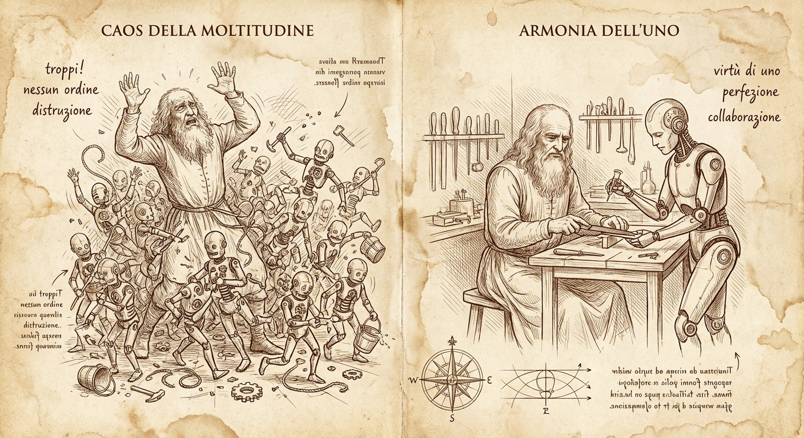
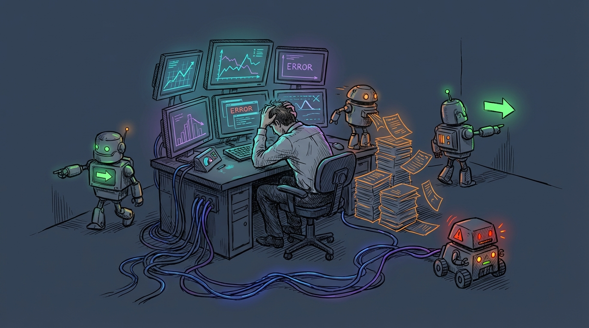
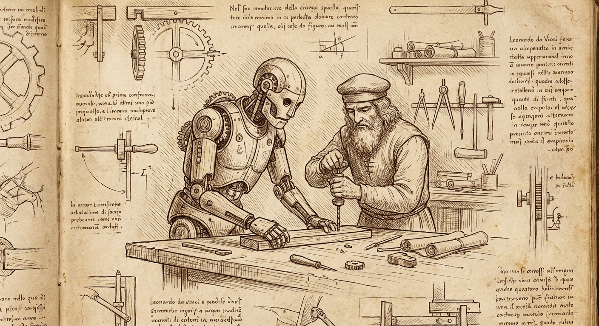
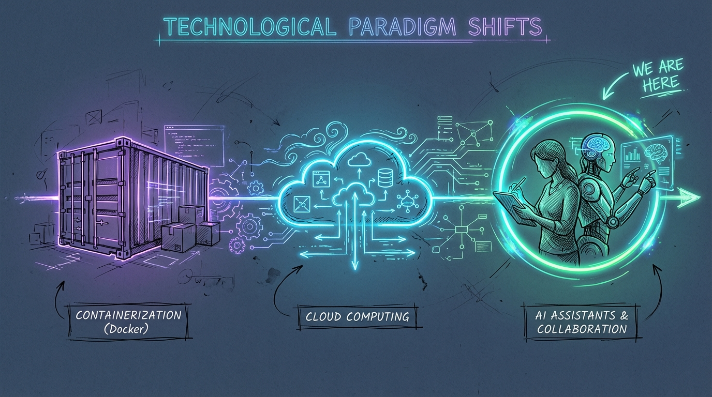
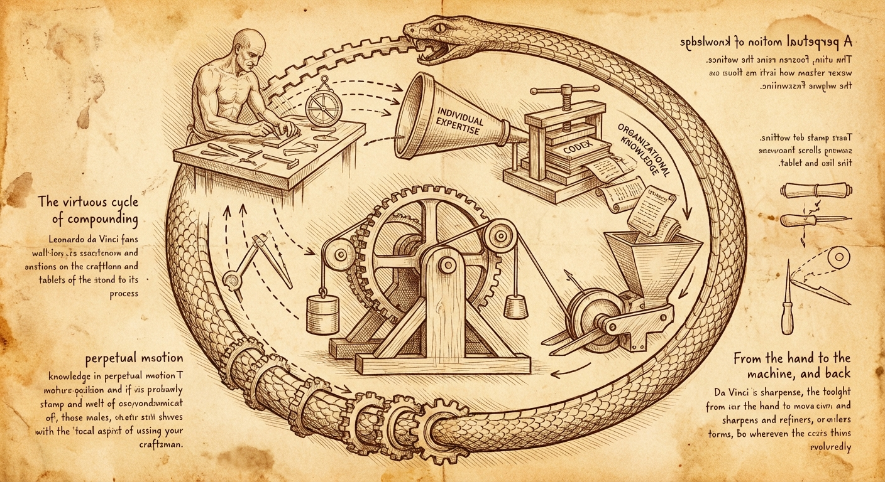

The fleet of interns vs. the augmented expert
Why the way you deploy AI matters more than whether you deploy it at all

I'm giving a talk at the Central Indiana Linux User Group on April 1st, and while pulling my notes together I realized the core argument deserved a longer write-up. So here it is.
Here's the premise: everyone is getting an AI assistant. That's not a prediction anymore, it's happening. The interesting question isn't whether AI will change how we work. It's whether companies will deploy it in a way that makes things better or catastrophically worse.
I've been watching two very different approaches play out, and the gap between them is widening fast.
Path A: the fleet of interns

Some organizations look at generative AI and see headcount reduction. The logic goes: if AI can write code, answer tickets, and draft documents, why are we paying all these people? Replace the senior engineers with AI tools, keep a few managers to supervise, and pocket the difference.
The problem is that this creates a situation where one person is now responsible for managing a fleet of interns. Not experienced professionals who can self-direct, identify problems independently, and exercise judgment. Interns. Fast, eager, well-read interns who have never touched a production system and will confidently tell you the wrong answer with a straight face.
I've been describing AI agents as 500-IQ college freshmen with zero real-world experience, and I haven't found a better analogy yet. They have encyclopedic knowledge, genuine ability to synthesize across domains, and a tireless work ethic. What they lack is production intuition, institutional context, and the ability to know the difference between what should work and what actually works in your specific environment.
When you fire the domain experts and hand the work to AI, you lose the people who had that context. The manager left standing doesn't have the bandwidth or the expertise to supervise twenty different AI workflows across domains they don't fully understand. The work degrades. The interns churn out plausible-looking garbage. Nobody catches it until a customer does.
Path B: the augmented expert

The alternative is straightforward but requires a different mental model. Instead of replacing your domain experts with AI, you give each of them an AI assistant.
This changes the economics of expertise. The senior engineer still has their domain knowledge, their production intuition, their relationships with customers and stakeholders. But now they also have a tireless partner who can search documentation in seconds, draft initial analyses, cross-reference JIRA tickets, and handle the kind of tedious retrieval work that used to eat half their day.
The time savings from automating grunt work are real, but honestly, that's not the part that changed my workflow the most. The bigger shift was having a sounding board available at all times. I can bounce ideas off my AI assistant, get pushback on proposals before I present them, and have it tell me why my approach is wrong before I've burned an afternoon on it. There's no ego involved, no scheduling, no waiting for someone to be available. It's just there, ready to argue.
I wrote about my support workflow in The Orchestrator Pattern a few months back. The short version: I specify which tools to use and the constraints to follow. The AI writes the specific commands, invokes deterministic tools, and synthesizes the results. I review everything, inject context the AI couldn't know, and push back when something doesn't hold up. We iterate until every claim in the deliverable can be defended to the customer, the support engineers, and me.
That's not fire-and-forget. It's a conversation. And it works because I'm the domain expert driving the process, not a manager trying to keep twenty autonomous interns from doing something stupid.
We've been here before

If this pattern sounds familiar, it should. We've watched the same adoption curve play out twice in the last fifteen years.
Containerization didn't succeed because a VP of Infrastructure mandated "everything in Kubernetes by Q3." It succeeded because individual sysadmins started running containers to solve their own problems, built up expertise, and eventually the tooling matured enough to standardize around. The organizations that tried to skip the organic adoption phase and mandate container workflows from above got exactly the mess you'd expect.
Same story with the move from desktop applications to cloud services. The early adopters weren't following a corporate directive. They were solving pain points with Google Docs and Slack and GitHub, and the mandate came later, after the grassroots adoption proved the model.
AI assistants are the third act of the same play. The individual contributors who figure out how to pair with AI effectively right now will be the people everyone copies in two years. The companies that try to skip ahead and mandate AI workflows from the top will repeat the same mistakes.
What Red Hat is doing (and what I think is right)
I want to be honest about the chaos. Red Hat engineers already had wildly diverse workflows before AI entered the picture. Nobody troubleshoots a case the same way. Nobody writes documentation the same way. Adding AI tools to that mix didn't create uniformity. It amplified the diversity.
Rather than fighting that, we leaned into it. We rolled out tools like Google's Gemini CLI in our case troubleshooting systems, but instead of mandating a rigid "use it this way" workflow, we let individual contributors figure out what works for them. Some people use it constantly. Some barely touch it. Most are somewhere in between, bending the tools to fit their existing methods.
The institutional response has been to build infrastructure, not mandates. Internally, Red Hat has built a data platform that gives associates access to curated data products and the ability to query across datasets naturally. The company has also published standards for agent development and provides local model serving through OpenShift AI, so teams can run Granite and other models on Red Hat's own infrastructure rather than depending entirely on external APIs.
The point isn't to hand everyone the same chatbot and call it a strategy. It's to provide the data, the models, the standards, and the guardrails — then let associates figure out how those pieces fit into their work. The company manages the substrate, not the workflows.
It's messy. I won't pretend otherwise. You end up with a dozen different approaches to the same problem, and standardization takes longer. But the approaches that survive are the ones that actually work for the people using them, not the ones that looked clean on a slide deck.
Closing the loop

There's a compounding benefit to the augmented expert model that goes beyond individual productivity.
When I resolve a support case using my AI-assisted workflow, the knowledge currently lives in my head, in the case notes, and maybe in a KCS article if someone writes one. That's a lot of friction between "problem solved" and "the next person benefits from the solution."
I've been building a system to close that gap. After a case is resolved, the AI helps distill the symptom-solution pair into a structured YAML contribution, following standardized component and symptom taxonomies. That YAML can then become a deterministic insights-core rule that flags the exact same issue automatically the next time it appears in a sosreport.
The AI's role is generative: it helps me extract structured information from the messy reality of case resolution. But the output is deterministic code that runs the same way every time, without requiring an LLM in the loop.
Every resolved case becomes a potential contribution to organizational knowledge. Individual expertise turns into organizational code. Over time, the routine problems get automated, and human expertise gets focused on the genuinely novel cases that need it.
That's the goal. Not to replace expertise, but to make expertise accumulate.
The practical version
If you're trying to figure out how to start:
Treat AI like a brilliant intern. Give it structured tasks, review its work at checkpoints, and use your domain expertise to catch the things it couldn't know. Don't hand it the keys to production and walk away.
Specify the tools, let the AI write the invocations. You know which tool is appropriate for the situation. It's good at constructing the specific command. Split the work along those lines.
Build deterministic tools the AI can call. If you find yourself repeatedly having the AI do the same kind of lookup, encode that in a script. Deterministic tools give you consistent results and are shareable across the organization.
Iterate until it's defensible. The first draft is never the final draft. Push back when claims aren't supported by evidence. If you can't defend it to the customer, it doesn't ship.
Find your own cadence. Nobody can tell you exactly how AI should fit into your specific workflow. Start small, experiment, and pay attention to where the actual time savings appear. They're often not where you'd expect.
I'm giving a talk on this topic at the Central Indiana Linux User Group on April 1st. If any of this resonates, come argue with me there.
— grimm